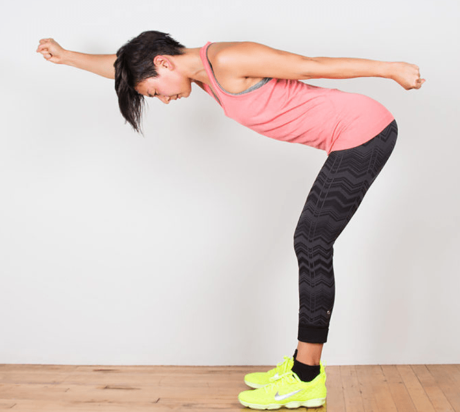
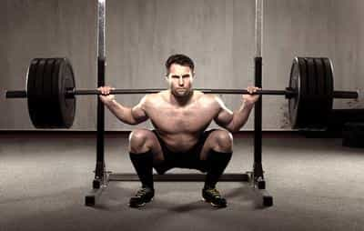

What masculine man doesn’t like going to the gym? It’s one of the few places in the modern world that functions as something of a male-only space (more or less), and serves as an opportunity for you to thumb the eye of a modern society that demands you be weak, pasty, and effeminate.
With that being said, as great a place as the gym is, there are people who make the gym going experience worse with their idiocy, bullheadedness, or combinations of the two.
1. The “I Came to the Gym to do a Bodyweight Routine” Guy

Like this, but imagine some goof flailing his arms around in the middle of a bunch of people lifting weights.
First of all, as somebody who ends his weightlifting routine by finding a quiet corner of the gym to do bridging and twist stretching, I understand this may come off as somewhat hypocritical. Let me explain.
This is the guy who doesn’t lift a single weight, but still manages to take up the entire gym doing his body weight routine. Laying in the middle of the room doing push-ups or bridges or whatever, or doing lunges across the entire gym, being a big awkward “thumb” impeding everybody else’s workout.
Bodyweight exercises are great, but if you’re going to do them, either stay home or at least find an empty room at your gym/health club, instead of being in everybody’s way.
2. The Grunting and Screaming Guy
35 pound tricep extensions are *really* hard and necessitate loud grunting and groaning
Again, a disclaimer: I am aware that when you exhale on the eccentric motion, the air is often “forced” out of you and you involuntarily grunt. That is acceptable.
No, I’m talking about the guy who screams loud enough for the people in the next gym over to hear, the guy who “hypes” himself up by bellowing long, multisyllabic sentences and all in all does everything in his power to embody every stereotype of the pigheaded gymgoing douchebag. Bonus points if Grunty here does all of his barking and bloviating while doing quarter squats or half a bench press.
3. The Gym “Sage”
This one is a little more difficult to explain, but I guarantee any steady gymgoer has seen this guy before and would recognize it upon seeing it.
This is the—often dad-bod having and thoroughly unimpressive—guy who, rather than actually doing his own exercising, deigns to waddle around the gym giving people thoroughly useless “advice” to people that are actually putting in the sweat equity. And even if he manages to have a halfway decent physique, I think we can all agree that workouts are moments of concentration and genuine toil—only women and gay men see the gym as some sort of socializing opportunity.
This is the guy who gives the sage advice that “machines are better than weights because weights are high impact,” “do heavy cardio after heavy weightlifting,” or other well-meaning incompetent soundbites.
Needless to say, this is also the same sort of guy who will spin ill-advised “gym game” by awkwardly sidling up to cardio bunnies running on the treadmill and trying to talk to these women gasping for air. The problems with this should be obvious to anybody reading, but quite obviously they’re not to this genius.
4. The Glamour Muscle Douche

“HAW HAW WHAT ARE YOU DOING GETTING READY FOR DOGGYSTYLE?”—Actual quote I’ve heard at my job.
First of all, let me say that while as a matter of principle I am against the idea of working out purely to get big useless fluffy beach muscles that only exist to get women, I do understand the temptation, and somebody who works out for that reason but minds his own business is somebody I can tolerate.
No, when I refer to a glamour muscle douchebag, I mean a guy who not only works out solely his glamour muscles, but will mock and disparage anybody that does functional training—and I mean things like pointing and laughing at somebody who uses the squat rack to *gasp* do squats!
Luckily, this guy can be shut up pretty quickly by challenging him to do the human flag, but that’s little relief to those who are weak but are genuinely making an effort to improve themselves. As somebody who’s job entails keeping the gym a pleasant environment while also avoiding it becoming a complete hugbox, this guy is a major wrench in the works. Bonus points if he has a “towel shirt” like the guy in the featured image.
5. The Uninhibited Old Man
And last but not least, this guy, who is simultaneously the least and most annoying guy on this list. He doesn’t mean to bother anybody, and would usually prefer to just leave everybody alone but… y’know, the wrinkly shrivelled penis and pockmarked skin is a bit taxing on anybody’s mental capabilities. While I wonder what, exactly, the age is when you stop giving a damn, just avert your eyes and you should be fine.
The gym is a great place, just don’t go out of your way to make it suck by doing any of these things.
Read More: The Best And Worst Nationalities of Women (According to Google)